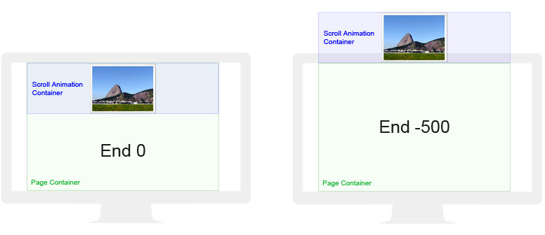
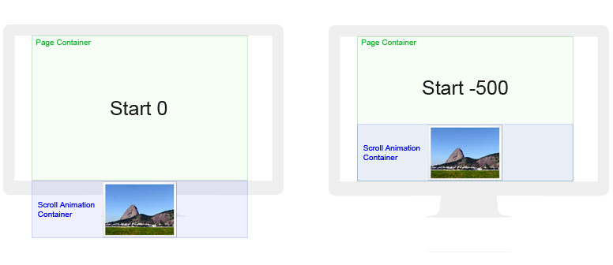
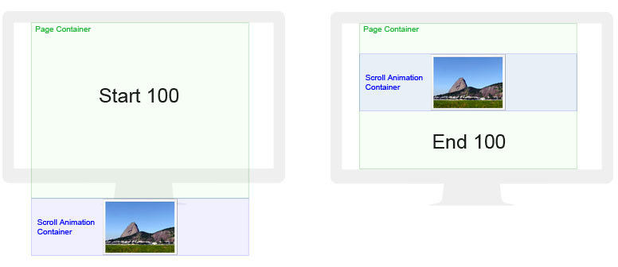
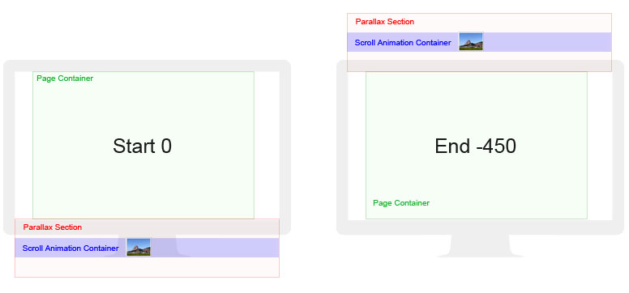
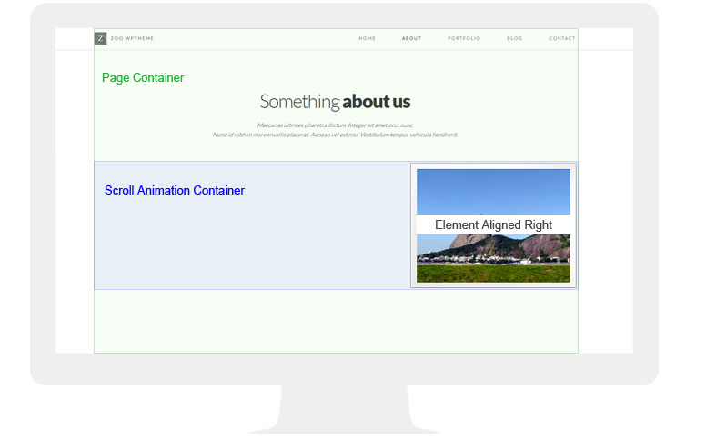
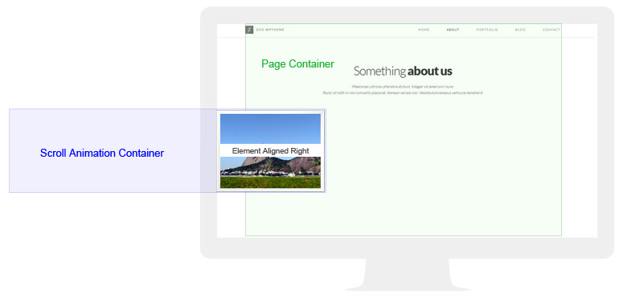
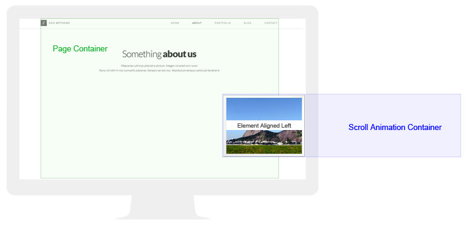

Thank you for purchasing my theme. If you have any questions that are beyond the scope of this help file, please feel free to email via my user page contact form here. Thanks so much!
To install this theme, you must have a working version of WordPress already installed on your server. http://codex.wordpress.org/Installing.WordPress. Please visit this link for instructions on installing WordPress. Once you have downloaded the package from themeforest, inside you will find the file zoo.zip which is what you need to install.
Once the theme is activated, you will see a notice of required plugins and also some recommended plugins.
Zoo shortcodes and Zoo custom posts are required for the theme features to function correctly. They will activate automatically once installed.
Contact Form 7 You can use any contact form plugin that you like. The Contact Form 7 plugin is my preferred plugin and I have included styles for it in the theme. You can view the author's documentation here http://contactform7.com/docs/
Simple Page Ordering This is a great plugin and will come in handy if you need to re order your page sections. It will allow you to drag and drop pages and the theme will display the page sections in that order. If you are moving pages around, make sure you update the menu to match the order of the pages. The “active/current page” section of the menu assumes pages will be in the same order as menu items and won’t work correctly if they aren’t.
Once you have imported the demo content you will need to go appearance > menus and save the imported menu “zoo” as the primary menu.
The Home page uses a different page template than other pages, The “Single Page” template. You can create more than one page like this if you wish. To do so, select the Single Page option from the template dropdown in the Page Attributes box. Pages that are children of the single page template will be added into sections of the parent page. You should use the default template for child pages.
To create a page section in a single page use the Default Template and select the desired parent from the parent dropdown box. (Parent must be a “Single Page template).
To create a standard page, (standalone page with no sub sections), you can just use the default page template and don’t assign it a parent page.
If you wish to create a standard page (standalone page with no sub sections) that has a SuperSlides Header, you will need to use the “Single Page” template as this is a full width template. All content below the [superslides] shortcode will need to be placed inside the
[grid][/grid]shortcode, including column shortcodes.
To set the front page of your site to display the “Home page” go to the Settings tab and click Reading. Then in front page displays, select A Static Page and then select Home from the front page drop down menu.
To display the SuperSlides Slider you need to insert the [super_slides] shortcode into any single page template. Once you have the shortcode inserted, you can begin to add and edit your slides from the SuperSlides tab.
Set the background for slides by clicking on Feature Image > Set Feature Image. The slider will scale images to fill all screen sizes and may crop them on certain screen / image sizes. This is done to maintain the aspect ratio of the image while filling the window. If they are cropped, they will be centred in the window. I recommend image sizes around 1024 pixels width by 690 pixels in height, but you can use larger or smaller images if you like.
Slide caption content needs to be entered in the post editor box. You can use the column short codes here and also the scroll animation shortcode to create animation effects like those in slides two and three on the demo. If you are using scroll animations in the slider, you need to make sure the Mode is set to Based on document height. Because the slider is at the top of the document, it will be easier to refine animation starting and end points in the document height mode. Please see Scroll Animations Shortcode for more information on creating scroll animations and parallax effects. There are some caption animation presets you you can use by selecting the animation style from the dropdown menu under the post editor box.
There are a few options for the SuperSlides that can be found in Theme Options > Slider Options.
SuperSlides Play – This is for an auto slideshow. The cycle speed is in milliseconds (1000 milliseconds = 1 second.) For example if you enter 4500 in this field, every four and a half seconds the slide will automatically go to the next slide. You can just leave this field empty if you don’t want the automatic slideshow.
SuperSlides Pagination – This will display pagination for the slides. Turn off to disable pagination.
SuperSlides Animation Type – There are two animation styles for slide transitions. You can select Fade or Slide.
To add a video slide you can use the shortcode. There are three kinds of video you can add.
Local .mp4
[video_slide type="local" url="http://yourwebsite/wp-content/uploads/2013/12/yourvideo.mp4"]
you can find the URL of your uploaded video by clicking on media > library and clicking edit on your video. The file url is located in the top right.
Vimeo video
[video_slide type="vimeo" url="//player.vimeo.com/video/50522981"]
URL of Vimeo type needs to be the iFrame embed SRC located in the embed field between src=""
Youtube video
[video_slide type="youtube" url="w9OhG7Wx1CY"]
URL of the Youtube type needs to be the Youtube video ID. You can locate this by clicking share on youtube and copying the last section of the link, the section after http://youtu.be/
The About Us Page is a standard page using the [tabbed_page] shortcode. You can have multiple pages like this if you like. To insert the tabbed page shortcode click on the Z icon at the top of the visual page editor box and click Tabbed Page. Enter the tab title/link name and the content for the tab. To add another tab, click the Add Tab button at the top of the window, you can add as many tabs as you like, click insert shortcode once you are done. If you want to use the shortcode generator to insert shortcodes into the tab content, you will have to insert the tabbed page shortcode first then add your other shortcodes between the [tabbed_page_tab] and [/tabbed_page_tab] shortcode.
To Add a new slide, click on the Flex Slider tab and click Add New. Set the image for the slide on Feature Image > Set Feature Image. Once you have some slides, the flex slider can be inserted using a shortcode. [flex_slider cat=''] cat refers to the category of slides to display in that slider. If left empty, it will display all flex slides. To add new categories, go to Flex Slider > Flex Slider Categories and enter the category name under Add New Flex Slider Category and click Add New Flex Slider Category. Alternatively you can click the Add New Flex Slider Category link in the post editor screen. Once you have some categories, you can assign slides to a category by checking/ticking them in the categories box. You can then enter the category name in the flex slider shortcode and the slider will only display slides in that category.
To display the Portfolio, use the [portfolio] shortcode. Portfolio items can be added by clicking on the Portfolio tab and > Add New.
The featured image is used for displaying the thumbnail on the main page. This image needs to be square so the rollover effect can slice it in half properly. 300 pixels in width and 300 pixels in height is the recommended size. An image 400 pixels in width and 300 pixels in height will display oddly, but 400 pixels x 400 pixels would be okay.
Titles of the portfolio post will be displayed on feature image rollover but won’t be automatically added to the single item view. This is done to give you more flexibility with design of each portfolio item and their headings. If you’re using headings in the portfolio single view, you will need to enter the title again in the post editor box but you will be able to use some of the fancy typography classes to style the headings. Please see typography for more information.
There are a few options for the portfolio which can be found in Theme Options > Styling Options.
Portfolio Item Rollover Color – the background color of the feature image.
Portfolio Single Background Color – the background color of the portfolio single popup.
Portfolio Single Navigation Color – the background color of the portfolio single post navigation bar
The Portfolio Filter Menu will display all the categories plus the “All” link. To add new categories, go to Portfolio > Portfolio Categories and enter the category name under Add New Portfolio Category and click Add New Portfolio Category. Alternatively you can click the Add New Portfolio Category link in the post editor screen. Once you have some categories, you can assign posts to a category by checking/ticking them in the categories box. Portfolio items will then filter by category.
You can use the column, parallax background and scroll animation shortcodes in the portfolio popup. Currently there is no support for sliders in the portfolio popup. If you would like full screen images in the portfolio popup, they can be inserted with the parallax background shortcode. To use the shortcode, click on the Z icon at the top of the Post Editor box and select Parallax Background. You will need the URL for the background image e.g. (http://www.your-website.com/wp-content/uploads/2013/01/your-image.jpg). You can find the URL for previously uploaded images by clicking on Media > Library and clicking the image thumbnail. The URL will be located in the top right of the Edit Media Screen. Once you have entered the URL click Insert Shortcode. You can nest content inside the parallax background shortcode including columns and scroll animations. Other content images, video and text should be put in column shortcode. For full width content use the [column_full] [/column_full] shortcode. To add a video, paste the embed URL into the editor on its own line. The embedded video will be responsive and fill whatever column you put it in. You can read more about WordPress embeds here - http://codex.wordpress.org/Embeds
You can display recent posts on the main page using the Recent Posts shortcode. To insert the recent post shortcode click on the Z icon at the top of the visual post editor box and click Recent Posts. Enter the amount of posts you wish to show and the amount of words to display for auto generated excerpts. If you have not written a manual excerpt, the auto generated excerpt will take the specified amount of words from the beginning of each post.
The Blog Pages can be full width, have a left sidebar or a right sidebar. You can select your preferred layout in Theme Options > General – Blog Layout. If you are using a sidebar you can edit the content and settings in Appearance > Widgets
Once you have setup the contact form 7 you can add a contact form here using a shortcode. The shortcode for contact forms can be found by clicking on the Contact tab. For more information on using the Contact Form 7 plugin, you can read the author's documentation here - http://contactform7.com/docs/. To add a map click on the Z icon at the top of the visual post editor box and select google map. The title of the map will be displayed in a tooltip when a user clicks the map marker along with the address. The zoom level refers to the resolution that the map will be loaded at. Enter a value between 0 and 21 (0 would display the entire world and 21 would display individual buildings). Once you have filled out your preferences click Insert Shortcode.
To style the map, go to Theme Options > Styling Options . There are three options for the map. Google Map Hue – This will set the basic color of the map, Google Map Saturation – This will set the intensity of the basic color. You can enter any value between -100 and 100. Google Map Marker – You can upload a custom marker image to be displayed here. You can find some nice marker icons here if you dont wish to create one - https://www.iconfinder.com/search/?q=marker
To serve high-resolution images to devices with retina displays, you just need to upload the high-resolution version of that image to the same foloder as the origional image. High resolution images need to use Apple's prescribed high-resolution modifier (@2x) to denote high-resolution image variants. For example "my_image.png" and "my_image@2x.png" devices with retina displays will then load the @2x version of the image.
To create animations that run in sync with position of the scroll bar you can use the scroll animations shortcode
[scroll_animation relative="" start="" end="" from="" to=""][/scroll_animation]
Elements positioned in this shortcode will animate from the CSS properties of the from attribute to the CSS properties of the to attribute. A generator for the shortcode can be found by clicking on the Z icon at the top of the visual editor and selecting scroll animation. Animation Starting and Ending points work differently depending on the mode you have selected. There are two modes (1) Relative to view port and (2) Based on document height. I recommend using Relative to view port for all animations apart from those in the slider or at the top of the document. Based on document height is a fixed measurement and based on the amount of pixels the scroll bar has scrolled.
[scroll_animation relative="no" start="0" end="200" from="top:10px;" to="top:500px;"] [/scroll_animation]
This animation will begin at the top of the website when the scroll bar has scrolled 0 pixels and it will end when the scroll bar has scrolled 200 pixels. The element inside this shortcode will be positioned at 10 pixels from the top when the scroll bar has scrolled 0 pixels, and 500 pixels from the top when the scroll bar has scrolled 200 pixels. It will animate between these positions while you are scrolling. For example if you had scrolled 100 pixels from the top of your website the element's position would be 245 pixels from the top.
Because this theme is responsive, the length of your website may change based on the screen sizes. It can also change while filtering the portfolio, switching tabs etc. So you should use the Relative to view port mode when the position of elements you want to animate is unpredictable.
[scroll_animation relative="yes" start="0" end="200" from="left:0px;" to="left:500px;"] [/scroll_animation]
This animation will begin when the top of “Some Element” is 0 pixels from the bottom of the screen and end when top of “Some Element” is 200 pixels from the top of the screen. In other words the element would start animating as soon as it is scrolled into view and end when it is 200 pixels from the top of the browser.
[scroll_animation relative="yes" start="0" end="-200" from="left:0px;" to="left:500px;"] [/scroll_animation]
This animation has a negative ending point so it will end when the top of the element is 200 pixels above the top of the screen. If you were animating an image 500 pixels in height and you wanted the animation to continue for the whole time the image was visible, you would use an end value of -500 so the animation would end when the top of the image is 500 pixels above the top of the screen and the bottom of the image is at the top of the screen.
  
Scroll animations placed inside the parallax section [parallax_section] shortcode inheret the position of the parallax section for the animation starting and ending points. For example The animation below will begin when the top of the parallax section is 0 pixels from the bottom of the screen and end when top of the parallax section is 200 pixels from the top of the screen, not when some element is 200 pixels from the top of the screen
[parallax_section background="somebackground.jpg"] [scroll_animation relative="yes" start="0" end="200" from="left:0px;" to="left:500px;"] [/scroll_animation] [/parallax_section]

Parallax sections are 450 pixels in height
With the shortcode generator you can generate the following properties
Left – This is the position of the element from the left of its container. For Scroll Animations inside full width sections (i.e. the superslides or parallax sections), it is the distance from the edge of the screen. For Scroll Animations in a page/section, it is the distance from the edge of the page container (diagram below). It is recommended to animate using a left property even if you want to animate from the right. For example
[scroll_animation relative="yes" start="0" end="0" from="left: 0px;" to="left:-1000px;"] [/scroll_animation]
You could use the above example to animate from right to left. Please note that all scroll animation containers are 100% in width by default. If you are animating from the right to the left, I recommend you align the element you are animating right
Left 0 Pixels 
Left Minus 1000 Pixels 
If you don't want to align the element to the right, the example below would achieve a similar effect but you would have to tweek the left measurement to get it to align with the right edge of the page container. The page container is 1170 Pixels wide on a desktop
[scroll_animation relative="yes" start="0" end="0" from="left: 1000px;" to="left:0px;"] [/scroll_animation]
Left 1000 Pixels 
Top – This is the position of the element from the top of its container. For an animation in a page section, it is the distance from the top of the page section. For an animation in a parallax section, it is the distance from the top of the parallax section. To animate from the bottom to the top just reverse the values like this
[scroll_animation relative="yes" start="0" end="0" from="top: 500px;" to="top: 0px;"] [/scroll_animation]
Opacity – This will animate the transparency of the element and create fading effect. You can enter values from 0.0 to 1 with 0 being 0% visible and 1 being 100% visible. 0.5 would be 50% visible.
Adding Custom CSS Properties - Those familiar with CSS will be able to have a lot of fun with this shortcode as you can also enter any other CSS into the start and end attributes. But there are some limitations.
All numeric values have to be the same
from=”width:10px;” to=”width:50%;”
from=”width:10%;” to=”width:50%;”
from=”width:10px;” to=”width:50px;”
The number of values have to be the same
from=”margin:100px;” to=”margin:300px 0px 0px 500px;”
from=”margin:100px 100px 100px 100px;” to=”margin:300px 0px 0px 500px;”
from=”margin:100px;” to=”margin: 500px;”
Color animations don't support named values like "red" or hex values like "#ff0000"
from=”background-color:red;” to=”background-color:blue;”
from=”background-color:#ff0000;” to=”background-color:#0000ff;”
from=”background-color:rgb(255,0,0);” to=”background-color:rgb(0,0,255);”
Animations between CSS transforms only work when they use the same functions in the same order
from="transform:rotate(0deg) scale(0);" to="transform: scale(1) rotate(1080deg);"
from="transform:rotate(0deg) scale(0);" to="transform:rotate(1080deg) scale(1);"
There's no need to enter browser prefixes like -webkit- or -moz- the shortcode will take care of them for you.
Styling and various other options for the theme can be found by clicking on the Theme Options Tab. The options are broken into five groups.
Here you can upload your logo and favicon, select your blog layout and edit the footer content.
Here you can adjust font sizes and font families. If you would like to change the font family from the theme default “Lato” you can select a google font here. To use a google font you need to enable them first. Do so by selecting yes for the first typography option Enable custom google fonts. You can then select a google font from the dropdown menu for each of the typography sections. There are four special classes in the typography options that can be adjusted and used by entering text/html mode in the post or page editor screen. Use these classes by entering class=”className” on an element.
<h1 class="accent">this is the accent font family you have selected</h1> <h1><span class="accent">Accent font family</span> H1 font family </h1> <p class="accent">this is a whole paragraph in the accent font family</p> <h1 class="mega">this is a big font size</h1> <h1 class="giga">this is a really big font size </h1> <h1 class="tera">this is a huge font size </h1> <h1 class="colored">this font is your accent color </h1>
Here you can style the google map and upload a map marker, change font colors, trim colors, navigation bar colors, the page background color, footer color and enter custom CSS for the theme.
There are some general settings here for each of the sliders. You can adjust animation styles, speeds etc. for the Flex Slider and SuperSlides. The testimonials slider auto play can be turned on or off here.
Enter you social network links in here. Social network icons will be displayed in the footer and you can also insert them with the [social_networks] shortcode. Icons will be displayed only if a link is entered in here. To remove icons you need to delete the URL from the associated field.
Zoo contains the following shortcodes. All shortchodes can be entered with the shortcode generator by clicking on the Z icon at the top of the visual page/post editor.
[column_full] [/column_full]
[column_third] [/column_third]
[column_two_thirds] [/column_two_thirds]
[column_third_last] [/column_third_last]
[column_half] [/column_half]
[column_half_last] [/column_half_last]
[column_quarter] [/column_quarter]
[column_three_quarter] [/column_three_quarter]
[column_quarter_last] [/column_quarter_last]
[column_three_quarter_last] [/column_three_quarter_last]
[grid] [/grid]
[button link="" transparent="yes"][/button]
[skill name="" level=""]
[scroll_animation relative="yes" start="" end="" from="" to=""][/scroll_animation]
[recent_posts num_posts="" excerpt_words=""]
[parallax_section background=""][/parallax_section]
[colored_parallax_section background="" start="" end=""][/colored_parallax_section]
[parallax_background background=""][/parallax_section]
[tabbed_page] [tabbed_page_tab title=""] [/tabbed_page_tab] [/tabbed_page]
[testimonials_slider] [testimonial image="" name="" company=""] [/testimonial] [/testimonials_slider]
[social_networks]
[super_slides]
[portfolio]
[google_map title="" location="" zoom="" height=]
[video_slide type="" url=""]